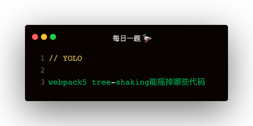

tree-shaking
webpack 的 tree-shaking 主要是基于 es6 的静态结构特性，如 import，export
- 没有导入和使用
- 代码不会被执行 或 不可到达
- 代码执行结果不会被用到
- 代码中只读不写的变量
没有导入和使用
bb 和 cc 两函数没有导入和使用，所以会被删除
// a.js
function aa () {
console.log('aa')
}
function bb () {
console.log('bb')
}
export {
aa,
bb,
}
// index.js
import { aa } from './a'
aa();
function cc () {
console.log('cc')
}
代码不会被执行 或 不可到达
aa 函数体中代码不可到达，所以会被删除
function aa () {
if (false) {
console.log('aa')
}
}
代码执行结果不会被用到
aa 函数返回的结果没有被用到，所以会被删除
// a.js
function aa () {
return 'aa'
}
// index.js
import { aa } from './a'
aa();
代码中只读不写的变量
以下 AA 会被删除，有点类似 Scope Hoisting
const AA = 'hello tree-shaking'
console.log(AA)
=> 打包结果
console.log('hello tree-shaking')
将文件标记为无副作用
比如在 index.js 中 import './index.css'，package 中配置了 sideEffects: false 就会把 css 删除掉
sideEffects 会把模块标记为有副作用或无副作用
// package.json
{
"sideEffects": false,
"sideEffects": [
"./src/some-side-effectful-file.js",
"*.css"
]
}
// index.js
import './index.css'
// index.css
body { color: red }
sideEffects 的配置方法：
- 有副作用："sideEffects": true
- 无副作用："sideEffects": false
- 正则匹配："sideEffects": ['*/.css']
- 具体文件："sideEffects": ['./src/index.js']
给语句标记为无副作用
通过给语句加 /#PURE/ 使其被 tree-shaking
sideEffects 的原理跟 PURE 类似，sideEffects 是作用于模块，而 PURE 是作用于语句
function aa () {
console.log('aaaa')
}
/*#__PURE__*/ aa();
正常情况下，console.log('aaaa')会被打包进代码，加了 PURE 之后不会打包
scope Hoisting
- 分析出模块之间的依赖关系，尽可能把打散的模块合并到一个函数中去，用到 es6 模块
- 只有被引用了一次的模块才能被合并
- 通过 webpack 内置插件实现：webpack/lib/optimize/ModuleConcatenationPlugin
最佳实践
- 使用 es6 的 import 和 export
- 确保编译器不会把 es6 模块语法转换为 CommonJS的
- package.json 中添加 sideEffects